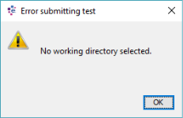
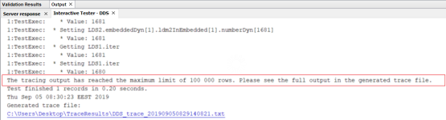
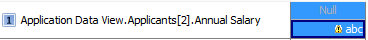
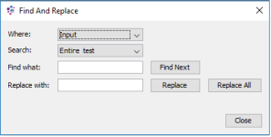

Additional Testing Features
When using the Interactive Tester, there are additional features available to users which enhance the usability of the tester.
- Filter characteristics
- Specify expected results
- Create a trace file which will provide details about the characteristics used in each test
- Validate input and output values
Users are able to filter within the Interactive Tester, in both the Tree View and Table View tabs, to locate specific characteristics.
To filter in the Interactive Tester
- At the top of both the Table View and Tree View tabs, use the
 field to filter the Input or Results.
field to filter the Input or Results. - The Input or Results (depending upon which filter box you have used) will automatically show only those fields that match the entered data.

| Filtering in the Tree View tab will affect the Table View tab and filtering in the Table View tab will affect the Tree View tab. |
|
If a user enters "sole" into the filter field in the Input window on the Tree View tab, as below, the Table View tab will automatically update to reflect the filter.
|
Users can specify the results, or range of results, you would expect when running an Interactive Test, then highlight any results that are different from the expected results. Expected results can be entered before running the test, or subsequently.
| Expected results are only visible when the Table View tab in the Interactive Tester editor is selected. However, the expected results can still be imported from the Tree View tab. |
To specify expected results
- Click on the Expected button to expand the Results table.
- Enter the expected values, either by manually typing in the fields, or by copying and pasting from Excel. To copy the data in Excel, right click in the test case you would like to paste the values into, and select Paste from the context menu.
- Run (or re-run) the test. The results are displayed along with the expected results for comparison.
- Select the "Different from expected" Highlight button
 to highlight the results that are different from the expected values:
to highlight the results that are different from the expected values:
| When pasting values onto the results table, the data will populate the Expected results. If the expected results are hidden when the paste occurs, the expected results will be automatically shown. |
| You can also copy values on their own or with characteristic names from the studio and paste into Excel by highlighting what you would like to copy, right clicking and using the context menu and pasting into Excel. |
| Only expected results can be overwritten and pasted over, actual results values cannot be. |
|
Data copied from the Interactive Tester will contain headers to indicate where the data originated. This can be seen in the below example.
|

{kind=link}
{kind=link}
{kind=link}
{kind=link}
{kind=link}
You can specify expected results for all or a subset of the test result characteristics.
The Interactive Tester allows users to create a trace file that provides added details about the characteristics used for each test case that is run.
After the data to be tested has been entered, users can click on one or all of the trace buttons  to produce a trace; a test file that can detail the pathway of each test case takes through the component and the value of selected characteristics each time they are read or written to.
to produce a trace; a test file that can detail the pathway of each test case takes through the component and the value of selected characteristics each time they are read or written to.
With Trace activated, the user must select a working directory into which the generated trace files will be placed. If the user does not select a working directory, the following error message will be displayed: 
{kind=link}
Using the Working directory icon, the Configure Working Directory dialog can be used to define the location of the working directory.
{kind=link}
{kind=link}
Once the test has been run and the test output area of the Interactive Tester editor has been populated, a temporary text file that details the trace is made available at the bottom of the screen in the Output window:
{kind=link}
For performance reasons, the maximum number of allowed trace output lines is 100,000. Rather than restrict the contents of the trace, the full output is generated into the trace file and placed in the location defined in the Configure Working Directory dialog. 
The following message is displayed along with details of where the trace file can be found in the Output tab:
{kind=link}
| Clicking on the link in the Output tab will open the generated trace file that contains all the tracing records. |
There are three types of trace that can be run, in any combination.
Clicking on the Trace Pathways button produces the following details about the pathway the test case takes through the component:
{kind=link}
{kind=link}
Clicking on the Trace Characteristics Reads  button produces the following details about the characteristic value that is read during the test:
button produces the following details about the characteristic value that is read during the test:
{kind=link}
Clicking on the Trace Characteristics Writes  button produces the following details about the characteristics values that are written as a result of the test:
button produces the following details about the characteristics values that are written as a result of the test:
{kind=link}
The trace buttons can be used in any combination.
There are two ways that the test cases are validated when data is entered:
- Input values are validated against the field's data definition, and are checked for data type and length. If the validation fails, an x appears in the cell and the tool tip describes the error:
- The input value is validated against a list of valid values specified in the Logical Data Source/Model for that characteristic, where available. If the value entered is not on the list or falls outside the allowed range of values, an x appears and the tool tip describes the error.
- The characteristic properties against which these validation checks are performed can be displayed at any time by clicking on the input cell. If the Properties window is not visible, it can be opened from the Window menu of the Main menu bar.
{kind=link}
{kind=link}
-
The tester will not run with errors, so all input must be corrected before execution.
Expected values are also validated.
- Expected values are validated in the same way as input values. However, instead of an x appearing in the cell containing the error, a yellow warning icon appears. The test can be executed when this icon appears.
{kind=link}

There are two ways to find invalid test data in the Interactive Tester.
The first is to click the Find previous invalid test data and Find next invalid test data buttons in the toolbar to move between the invalid values in the tester. The functionality finds the invalid test data in the displayed table. Users can manually or automatically correct the invalid values.
The second is to use the find and replace function which allows users to search for specific test data and replace it automatically, if required.
Further information on the above can be found in the Finding and Replacing test data section.
| In the Tree View, only the invalid data in the current test case will be searched. To find invalid test data in other test cases, users should switch to the test case in which they wish to search or move to Table view. |
Users are able to search for test data in the Interactive Tester. Users may want to do this to locate test data or to find and correct errors in the test data.
There are two ways to find test data in the Interactive Tester. Users are able to click the Find previous invalid test data and Find next invalid test data buttons in the toolbar to move between invalid values in the tester. This functionality finds the invalid test data in the displayed table only. Users can manually correct the invalid values.
To search for and replace a value, users can click the Find and Replace button in the toolbar.
To find and replace input data
- Click the Find and Replace button. The Find and Replace dialog opens.
- Select or enter the data for which you would like to search.
{kind=link}

- From the Where drop down, select whether you want to search for the value in the test input or expected values.
- From the Search drop down, select in which area of the Interactive Tester you would like to search.
| In order to search expected values, they need to be visible. |
- Entire test - searches within the whole active area.
- Selection - searches within a highlighted selection of the test data.
- Invalid test data - searches only within invalid test data.
- In the Find what field, enter the data for which you would like to search.
- If you would only like to search, click Find Next. To search for and replace data, proceed to the next step.
- To search for and automatically replace data, in the Replace with field, enter the value you would like to replace the data entered in the Find what field.
- Click either Replace or Replace All.
| The Find function searches for exact string matches. Data should be entered exactly as it appears on screen. |
- Replace - choose this option to replace only the first instance of the search data. If the cell containing the search data is not selected, clicking Replace will select the first instance of the search data. Once the first instance is selected, click Replace again to replace the data with the new value.
- If there are no matching values, a dialog notifying you of this will appear.
- If there are matching values, the first instance will be selected and upon subsequent clicks, the proceeding instances will be selected in turn. When the end of the search area has been reached, a dialog indicating this will appear.
- Replace All - choose this option to replace all instances of the search data. When this has been done, a dialog confirming that the replacements have been made will appear.
- To close the dialog, click Close.